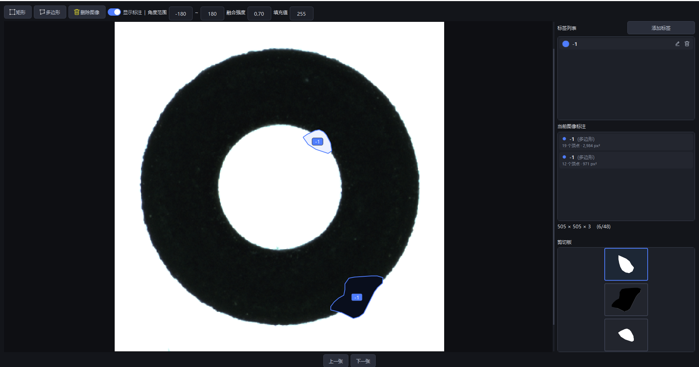
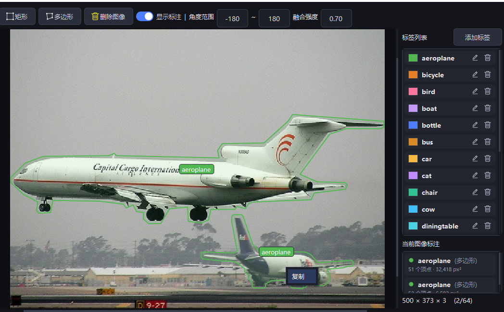
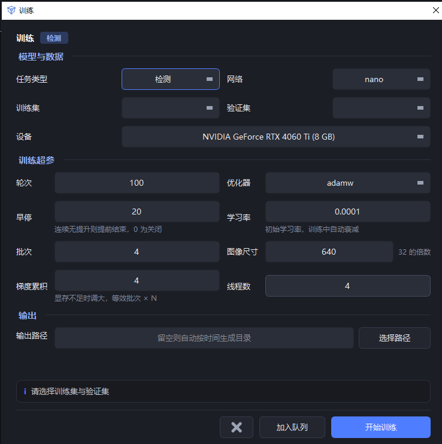
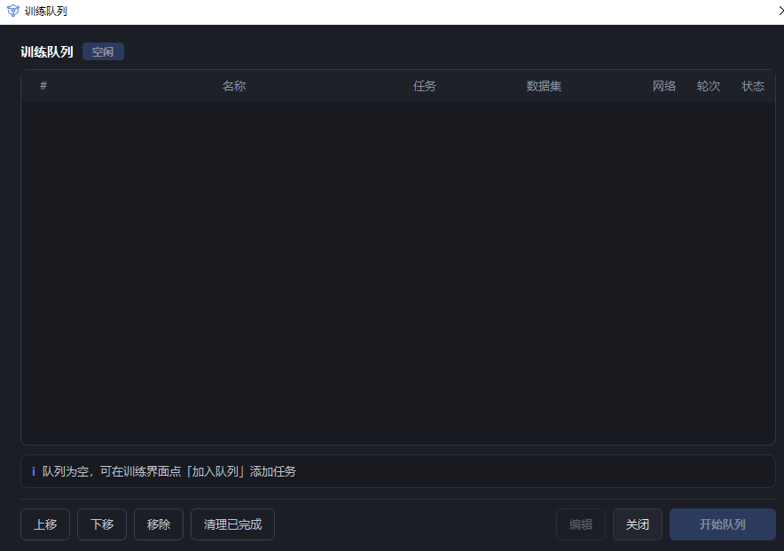
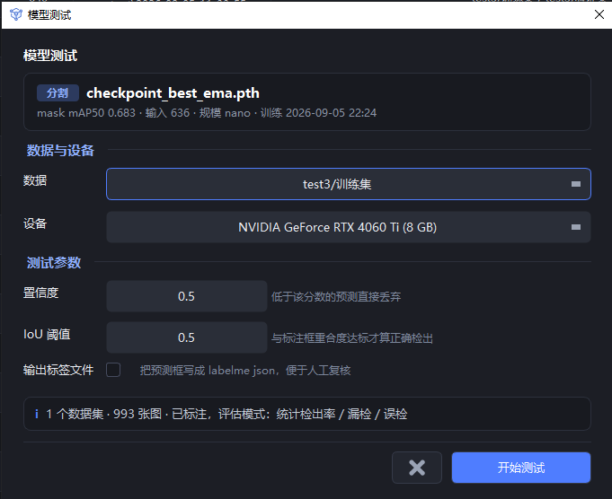
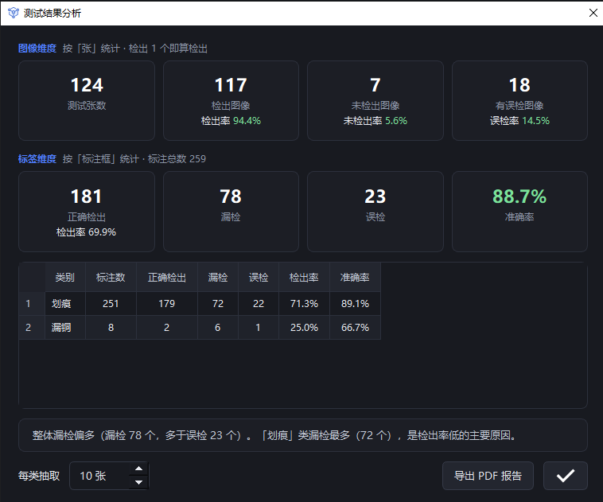

EasyTrainer 使用教程
1. 软件概览
主界面采用三栏布局：
- 左侧项目树：项目与数据集层级展示，数据集节点带标注进度（如 126/128）；
名称前的圆点表示该数据集是否已加载进内存（绿=已加载，红=未加载）
- 中间图像区：缩略图分页浏览，底部有翻页与总数
- 顶部工具栏：显示比例、标注筛选，以及编辑、删除、导入、导出、属性、训练、模型、日志等按钮
 EasyTrainer 主界面
EasyTrainer 主界面
2. 项目与数据集管理
2.1 添加项目
点击左侧 + 添加项目 按钮，输入项目名称后确定。
项目是数据集的容器，所有数据集必须归属于某个项目。
 输入项目名称
输入项目名称
2.2 添加 / 重命名 / 删除数据集
右键点击项目节点弹出菜单：添加数据集 / 导出项目 / 修改名称 / 删除项目。
- 添加数据集：在项目下新建一个数据集
- 导出项目：把整个项目的数据集与标注导出为指定格式
- 修改名称：重命名项目
- 删除项目：连同其下数据集、标注、训练记录一并清除
右键点击数据集节点则是对该数据集的操作：载入 / 导入 / 导出 / 移动 / 修改 / 删除。
其中载入用于重新扫描该数据集的图像与标注并重建缓存。
 项目右键菜单
项目右键菜单
2.3 导入数据
选中数据集后，点击顶部 导入 按钮，弹出"导入数据"对话框：
- 图像路径：选择图片所在文件夹
- 标签路径：选择标注文件所在文件夹
- 标签格式：Yolo txt / Labelme json / 按子文件夹分类导入
分类数据集选择"按子文件夹分类导入"：每个子文件夹名作为一个类别，无需标注文件。
 导入数据对话框
导入数据对话框
2.4 数据集属性与标签分布
选中数据集后点击顶部 属性 按钮，可查看图像路径、标签路径，
以及标签分布柱状图（每个类别的标注框数量），用于快速发现类别不均衡问题。
 数据集属性与标签分布
数据集属性与标签分布
3. 标签管理
3.1 添加或导入标签
在标注界面右侧标签列表上方点击 添加标签：
- 标签名称：多个标签用逗号分隔，可一次添加多个
- 导入：从已有数据集一键导入全部标签
- 颜色：从预设色板选取，或点击"自定义"挑选颜色
 添加或导入标签
添加或导入标签
3.2 批量修改类别
选中数据集后，在图像区缩略图上右键选择"批量修改类别"，
输入原类别与新类别，即可把整个数据集中该类的标注全部改名：
 类别批量修改弹窗
类别批量修改弹窗
3.3 修改单个标注的类别
进入标注界面后，在标注框上点击即可弹出类别下拉菜单，
选中新类别即完成修改；右侧标签列表中的标签也可重命名、改色、删除。
 在标注框上直接修改类别
在标注框上直接修改类别
4. 图像标注
4.1 进入标注界面
在左侧树选中具体数据集后，右键缩略图选择“标注”，或直接双击缩略图进入。
4.2 矩形与多边形标注
标注界面顶部工具栏提供两种绘制工具：
- 矩形：拖拽鼠标画矩形框
- 多边形：依次点击顶点，双击或回车结束（分割任务用）
- 删除图像：删除当前这张图
右侧标签列表选择类别；勾选“显示标注”可随时隐藏所有框查看原图。
右下方“标注信息”面板列出本图所有标注对象的形状（矩形/多边形）、顶点数与面积；
其下方图像信息显示当前图的宽 × 高 × 通道数（如 505×505×3）与序号。
“图像信息”下方为剪切板区：右键复制多边形后，被复制区域的缩略图
（120 × 90）会加入这里，最多 9 张、纵向排列、可上下滚动，
最新一张默认选中并带蓝色边框；右键缩略图可删除该张或清空全部。

矩形 / 多边形标注、标签列表与右下角剪切板
4.3 标注对象复制（数据增强）
右键多边形标注有两个操作：
- 复制：把该多边形区域的像素存为模板，同时在右下角剪切板生成缩略图
- 填充：把区域内的像素改成“填充值”输入框的灰度（0 ~ 255，默认 255）,
常用于把缺陷区域抹成背景色
复制后在图像空白处右键选择粘贴，即可把剪切板中当前选中的那张缩略图
贴到鼠标位置（同图或跨图均可）：
- 角度范围：粘贴时随机旋转的角度区间（默认 -180 ~ 180）
- 融合强度：0 ~ 1，默认 0.70。粘贴时自动做亮度补偿和边缘羽化，
让粘贴区域与背景自然过渡；设为 0 则等同直接硬贴
- 填充值：0 ~ 255，默认 255，配合右键“填充”把区域抹成该灰度
- Ctrl + Z：撤销最近一次粘贴或填充（恢复像素并移除随之新增的标注），
可连续撤销

右键复制标注对象 → 剪切板缩略图，工具栏设置角度范围 / 融合强度 / 填充值
4.4 按标注类别筛选
首页顶部工具栏的类别下拉框，选择某类别后图像区只显示含该类别的图，
便于集中检查、补标某一类。
 按类别筛选缩略图
按类别筛选缩略图
5. 训练与训练队列
5.1 训练参数配置
点击首页或模型界面的训练按钮，弹出训练参数配置：
- 任务类型：检测 / 分割 / 分类（按数据集格式自动联动）
- 训练集 / 验证集：多选数据集，可跨项目组合
- 设备：自动列出可用 GPU（如 NVIDIA GeForce RTX 4060 Ti）
- 训练超参：轮次、优化器（检测/分割=adamw、分类=sgd）、早停
（连续 N 轮无提升则提前结束，0 为关闭）、学习率（训练中自动衰减）、
批次、图像尺寸（32 的倍数）、梯度累积（显存不足时等效放大批次）、线程数
- 输出路径：留空则自动按时间生成目录，也可点"选择路径"指定

训练参数配置对话框
5.2 训练队列
配置好后除"开始训练"外，还可以点加入队列把任务先挂起来，
继续配置下一个。点击首页 训练队列（或训练窗口入口）打开队列窗口：
- 队列按顺序依次执行，支持检测 / 分割 / 分类任务混排，自动逐项切换
- 上移 / 下移 / 移除：调整执行顺序或删除任务
- 编辑：修改选中任务的参数
- 清理已完成：移除已跑完的记录
- 开始队列：从头依次执行队列中的任务
队列适合晚上挂机：把多个数据集的任务一次配好，软件会自动跑完全部并分别保存模型。

训练队列窗口
5.3 训练进度监控
点击"开始训练"后回到首页，顶部出现进度条与控制条：
- 任务名 + 进度：如 "coco128 训练中 5/100"，进度条内显示当前轮 loss
- 停止训练：随时终止（已完成的部分会保存）
- 剩余时间：按已用时长外推估算
- 显存：实时显示 GPU 显存占用率
 训练进度条与状态栏
训练进度条与状态栏
5.4 训练指标查看
在模型管理窗口选中某条训练记录，点击右侧详情面板的查看完整指标，弹出训练曲线窗口：
- 上半图：val loss 曲线
- 下半图：mAP@50-95 / mAP@50 / AR / F1 / precision / recall 等多条曲线
（分割任务还会显示 mask mAP 曲线）
- 右上角"标签筛选"下拉框可切换查看全部指标或某个类别的曲线
 训练指标曲线（val loss + 各项精度）
训练指标曲线（val loss + 各项精度）
6. 模型管理
点击首页 模型 按钮打开模型管理窗口，左侧为训练记录列表，
右侧为固定详情面板：
6.1 筛选与列表
- 搜索框：按项目 / 数据集 / 标签关键字过滤
- 任务 / 状态下拉：只看检测 / 分割 / 分类，或训练中 / 已完成 / 失败 / 已停止
- 仅看每个数据集最佳：同一数据集只保留精度最高的一条
- 列表列：任务、数据集·标签、精度、训练时间、耗时、图像尺寸、操作
- 精度列带色条：绿 ≥0.8、黄 0.5～0.8、红 <0.5；
失败/已停止的记录在精度列显示状态文字，悬停可看失败原因
- 行内按钮：测试（打开模型测试）、导出（导出模型权重并附带
classes.txt 类别对照）、删除（同时清理对应训练记录）
6.2 右侧详情面板
点击任意一行，右侧显示该记录的完整参数：任务·规模、状态、精度、训练/验证集、
图像尺寸、轮数/早停、批大小、学习率、优化器、设备、标签、训练时间、耗时、模型路径，
上方还有精度曲线缩略图。面板底部四个按钮：
- 查看完整指标：打开训练曲线窗口（见 5.4 节）
- 测试此模型：用该模型打开测试对话框（见 7.1 节）
- 按此配置重训：带出该记录的全部训练参数重新开一次训练
- 打开模型目录：在资源管理器中定位权重文件
 模型管理：筛选条 + 训练记录列表 + 右侧详情面板
模型管理：筛选条 + 训练记录列表 + 右侧详情面板
7. 模型测试与评估报告
7.1 测试参数设置
在模型管理窗口点击行内测试按钮（或详情面板的“测试此模型”），
弹出模型测试对话框。顶部显示模型信息
（任务类型、权重文件、训练精度、输入尺寸、规模），下方配置：
- 数据：跨项目所有数据集可选
- 设备：默认第一个可用 GPU
- 置信度：低于该分数的预测直接丢弃
- IoU 阈值：预测框与标注框重合度达标才算正确检出
- 输出标签文件：勾选后把预测框写成 labelme json，便于人工复核
数据集已标注时自动进入评估模式：统计检出率 / 漏检 / 误检。

模型测试参数配置
7.2 测试结果分析
测试完成后弹出"测试结果分析"窗口，分两个维度统计（全部用直白的
"正确检出 / 漏检 / 误检"表述）：
- 图像维度（按张统计，检出 1 个即算检出）：测试张数、检出图像及检出率、
未检出图像、有误检图像
- 标注维度（按标注框统计）：正确检出、漏检、误检、准确率
- 按类别表格：每类的标注数 / 正确检出 / 漏检 / 误检 / 检出率 / 准确率
- 底部结论：一句话点出整体偏漏检还是偏误检、拖累最大的类别

测试结果分析窗口（图像维度 + 标注维度 + 按类别明细）
7.3 导出 PDF 报告
点击右下角 导出 PDF 报告，后台线程生成评估报告，内容包含：
- 总览页：指标汇总表 + 标注分布图
- 漏检样本页、误检样本页：按"每类抽取 N 张"（左下角可调）展示缩略图，
图上用红框标出漏检 / 误检位置，并注明抽取比例
- 建议页：针对各类错误给出改进方向
抽样只发生在出报告这一步，明细数据仍是全量，后续做难例挖掘不会丢数据。
8. 日志
点击首页顶部 日志 按钮，打开日志窗口，实时显示：
- 软件启动 / 退出
- 项目 / 数据集创建、重命名、删除、导入 / 导出
- 标签创建、重命名、删除
- 训练开始、训练中（[train] 前缀转发子进程输出）、指标更新、模型保存、手动停止
- 测试启动、测试中（[test] 前缀）、完成、失败
 日志窗口
日志窗口